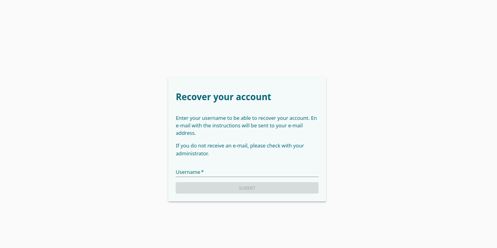
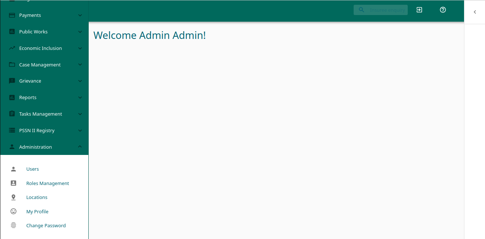
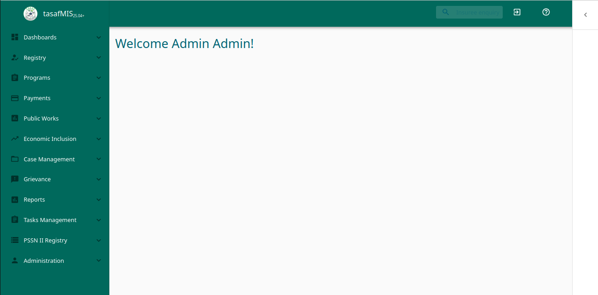

1. Introduction
The Registry Module is where household and household-member data lives in TASAF MIS. It is the social protection registry that feeds PMT classification, enrollment, payroll, and MUSE-driven payments.
From the Registry Module you can:
- Search and view households and their members.
- Open and review interview records pulled from Survey Solutions.
- Identify non-consented households (kaya ambazo hazijahojiwa).
- Identify PMT-eligible households (POOR class) and enrollable members.
- Trigger a fresh Survey Solutions import per PAA / district.
- Reconfigure and re-run PMT scoring per district.
This module does not send payments, generate paylists, or talk to MUSE — those live under the TASAF Payment module.
2. Login and access
- Open TASAF MIS in your browser. The login screen shows the TASAF logo and the tasafMIS app name.
- Enter your Username and Password and click LOG IN.
- If you've forgotten your password, click FORGOT PASSWORD? and follow the recovery flow.
- After login, the Registry menu on the left shows the Registry Module entries you have rights for. If you do not see them, your role needs to be granted the relevant permission codes.


If the login screen shows an error such as "can't access property tokenAuth, response.payload.data is undefined", the backend may be unreachable. Confirm with your administrator that the backend service is up before retrying.

Required rights per Registry menu item
| Menu item (as shown in the UI) | Right (permission code) |
|---|---|
| Import Data | 159001 |
| Targeted Households | 180001 |
| Targeted Members | 159001 |
| Uninterviewed | 159001 |
| PMT Rerun | 180005 |
| Enrollment List | 180005 |
| Eligible Households | 180001 |
| Eligible Members | 159001 |
| Survey Monitoring | 159001 |
If you do not have any of the above rights at all, ask an administrator to grant them. Administrators manage users, roles, and locations from Administration → Users / Roles Management / Locations:

3. Registry Module menu navigation
After login you land on the TASAF MIS welcome screen. The left side bar carries the application menu, the top bar carries the global search box, logout, and help icons.

3.1 The Registry menu
Click Registry in the side bar to expand it. The Registry Module exposes the following entries:

3.2 Related sections
You will see two more sections that interact with the Registry Module:
- PSSN II Registry — PSSN II Individuals, PSSN II Households, Legacy Imports. Use these when you need to consult or import the previous PSSN II registry data alongside the current Registry Module.
- Dashboards — Individual Reports, Group Reports, Beneficiary Reports, Data Updates Reports, Grievance Reports, Invoice Reports, Payment Reports, Manage Dashboards. These render summary views over the Registry data.


4. Households (Targeted Households)
4.1 Search the household list
- Open Registry → Targeted Households.
- Use the Search Criteria bar at the top to narrow by HHID, head name (first / last), village code, or "Missing Location" flag.
- Pick a Region, District, Ward, and Village using the location pickers. Click SEARCH (top-right) to apply, or RESET FILTERS to clear.
- The result table shows total count ("6507 Households Found"), and per row: HHID, Head, HH Size, Region, District, Ward, Village. The pencil icon opens the household detail.
- Top-right buttons: DOWNLOAD exports the filtered list and ENROLLMENT drives the enrollment flow.

4.2 View household details
- Click the pencil icon on a row (or double-click the row) to open the household detail page.
- The head panel shows: HHID, head, primary recipient, location, PMT score and class.
- Tabs: Individuals, Benefit Plans, Change Log, Benefits, Tasks.
- To edit, change the field then click the floating Save button. The change is journalised and visible in the Change Log.
- To delete, use the trash icon — a confirmation dialog appears before the soft delete.
4.3 Add or move members
- Add an existing member: click the
+icon, search for the member, pick a role and recipient type, confirm. - Move a member into a new household: from the member's detail page, this creates a new household with the moved member as HEAD and produces a maker/checker task.
5. Household members (Targeted Members)
5.1 Search the member list
- Open Registry → Targeted Members.
- Filter by First Name, Last Name, Village Code, or use the Region / District / Ward / Village pickers. Toggle DEDUPLICATE, Show Deleted, or Missing Location as needed.
- The result table shows total count ("23983 Household Members Found") and per row: First Name, Last Name, Day of birth, Region, District, Ward, Village.
- Top-right buttons: DOWNLOAD, ENROLLMENT, UPLOAD, UPLOAD HISTORY. Click the pencil icon to open a member detail page.

5.2 View member details
The detail page shows the head panel (names, DOB, location) plus tabs: Benefit Plans, Change Log, Tasks, Benefits, Group history.
5.3 Edit or delete a member
- Update any editable field and click Save. Row-level security (your district scope) is enforced. Every save creates a mutation log entry.
- Deletion is soft (sets
is_deleted = true). Admins can undo through an undo-delete mutation. Tick Show Deleted on the search bar to bring back hidden rows.
5.4 Uninterviewed households (kaya ambazo hazijahojiwa)
Open Registry → Uninterviewed. The list shows households whose head was not interviewed or who declined consent (json_ext.consent_res = "2" / "02"). The Reason column carries the Swahili description (e.g. Mwakilishi wa kaya hajahudhuria mahojiano = "household representative did not attend the interview"). Use this page to triage data-quality issues from the field.

6. Importing registry data from Survey Solutions
The Registry Module imports interview data through the PAA-based ETL.
6.1 Trigger a PAA import
- Open Registry → Import Data. The page is split into three blocks: Import Data — API, Import Survey Solutions Data by PAA, and Import History.
- The API block (top) lists registered ETL services (currently
SurveySolutionService). Clicking PULL DATA there runs the named service end-to-end. This is the legacy entry point. - The by PAA block is the normal path. Pick Region and District / PAA. Only districts you have rights for appear.
- The system auto-detects the questionnaire that matches the PAA. Open Show Advanced Options to pick a specific questionnaire, paste a manual identity (
GUID$version), or tick Dry run. - For Zanzibar districts the page shows a "Zanzibar PAA scope" hint (
PEMBA/UNGUJA). - Click TRIGGER IMPORT. Confirm in the dialog.
- The page polls Import History every 12 seconds and refreshes the row count while the import is running.

SurveySolutionService. Middle: PAA-based import with Region / District pickers and Advanced Options. Bottom: Import History table with the District/PAA, household count, member count, questionnaire version, date, and status chips.6.2 Monitor import history
The "Pulled questionnaires" table at the bottom of the page shows one row per import:
| Column | Meaning |
|---|---|
| PAA name | District display name. |
| Number of households | Unique households touched (insert + update). |
| Number of members | Individuals touched. |
| Questionnaire version | Numeric version of the HQ questionnaire. |
| Date pulled | When the import started. |
| Status | running · completed · failed · cancelled |
If a row stays running longer than 12 hours, it is automatically marked failed the next time the page is loaded.
6.3 Legacy single-service trigger
The top "Import Data — API" card lists every ETL service registered in the backend. Pressing PULL DATA there runs the named service end-to-end. In current TASAF use only SurveySolutionService is wired; other services are demos.
7. PMT (Proxy Means Test)
7.1 PMT Rerun (configuration & recalculation)
- Open Registry → PMT Rerun.
- Pick the district whose cutoff you want to set.
- The page shows the current cutoff (default
11.01). Update it (allowed range0 ≤ cutoff ≤ 50) and save. - Optionally click Run PMT recalculation. A progress dialog appears showing percentage complete, processed households, and newly enrolled POOR households.
- When finished, the audit summary table refreshes.
7.2 PMT Audit Summary
The audit summary table shows one row per district with:
- District code and name.
- Total households scored.
- POOR / NON_POOR counts.
- Average and median PMT score.
- Last rerun timestamp.
7.3 Enrollment List
Open Registry → Enrollment List. The page is district-scoped. The list shows, for each household: HHID, Head Name, Village, PMT Score, and Status (POOR / NON_POOR). Filter by HHID, head name, PMT Status, and the Region / District / Ward / Village pickers. Click DOWNLOAD PDF (top-right) to export the filtered list.

8. Eligible Households / Eligible Members
Two pre-filtered views for enrollment officers:
- Eligible Households: households where
pmt_class_household = POORAND the head is consented. - Eligible Members: members whose household is PMT-eligible and consented.
Use them when running an enrollment campaign. The action bar lets you trigger maker-checker enrollment confirmation.
9. Survey Monitoring Dashboard
Open Registry → Survey Monitoring for a real-time view of Survey Solutions field activity. The page header shows the last sync time from HQ, an Auto-refresh (30s) toggle, and a SYNC NOW button. The dashboard auto-refreshes every 30 seconds and shows:
- Filters — questionnaire (PAA) picker, "Submitted since" date filter, auto-refresh toggle, "Sync now" button.
- Pipeline strip — 4-stage funnel: Started → Completed → Approved by supervisor → Approved by HQ, with conversion percentages.
- KPI tiles — rejection rate, awaiting-supervisor count, awaiting-HQ count, active enumerators (with sparkline).
- Interview feed — latest interviews; clicking a status chip filters the feed; "Open in HQ" opens the interview directly in Survey Solutions HQ.
- Enumerator leaderboard — top producers; click a row to filter the feed.
- Trends — completion S-curve, daily productivity bars, 7×24 activity heatmap.
KPIs (Data collection pipeline tiles) are exact — per-status TotalCount queries against HQ. Live interview activity, the leaderboard, and the heatmap are based on a bounded sample of interviews (sample size shown in the UI).

10. Common statuses and what they mean
| Where | Status | Meaning |
|---|---|---|
| Import history | running | The ETL Celery task is in flight. |
| Import history | completed | The ETL finished successfully; counts saved. |
| Import history | failed | The task raised an exception or was timed out; tooltip carries the error. |
| Import history | cancelled | The task was cancelled before completion. To confirm from implementation: how a user cancels (no UI control exists today). |
| PMT enrollment | PENDING | Default after creation; not yet decided. |
| PMT enrollment | ENROLLED | Auto- or operator-enrolled into a programme. |
| PMT enrollment | DISENROLLED | Manually disenrolled; reason stored. |
| PMT enrollment | SUSPENDED | Temporarily withheld. |
| PMT enrollment | REJECTED | Rejected at maker-checker. |
| PMT class | POOR | PMT score ≤ active cutoff. |
| PMT class | NON_POOR | PMT score > active cutoff. |
| Member role | HEAD · SPOUSE · SON · DAUGHTER · MOTHER · FATHER · GRANDFATHER · GRANDMOTHER · GRANDSON · GRANDDAUGHTER · SISTER · BROTHER · OTHER RELATIVE · NOT RELATED | |
| Recipient type | PRIMARY · SECONDARY | |
| Consent | consent_res = 2 / 02 | Non-consented household head — surfaces on the Kaya ambazo hazijahojiwa page. |
11. Common errors and how to resolve them
| Symptom | Likely cause | Resolution |
|---|---|---|
| "An import is already running for this district." | A previous PAA ETL is still running (or stuck) for the same district. | Wait, or ask an admin to inspect the row and worker logs. Stale rows (>12h) are auto-failed on next page load. |
| "Questionnaire validation failed: Selected questionnaire X does not belong to PAA/district Y" | The chosen questionnaire identity does not match the picked PAA. | Pick a questionnaire whose title matches the PAA, or leave on auto-detect. For Zanzibar, use the PEMBA / UNGUJA alias districts. |
| "No matching questionnaire found" | HQ has no questionnaire whose title matches the prefix and PAA. | Open Survey Monitoring → questionnaire picker to confirm HQ has the right version. As a workaround, paste the identity manually in Advanced options. |
| Import row stuck in running for hours | Worker crashed mid-task, or HQ export timed out. | Re-run the same district. The ETL is idempotent and dedups by interview key. Admins can also force-stale at the 12 h mark. |
| "No data + no questionnaire dropdown" on Survey Monitoring | Backend is on an older build without the latest dashboard schema. | Ask an admin to restart the backend container so the editable install reloads. |
| Empty Eligible Households / Members list | No PMT recalculation has been run, or the chosen district has no POOR households. | Open Registry → PMT Rerun → run PMT recalculation for the district. |
| "Unauthorized" | Your role is missing the right. | Ask your administrator (see §2). |
12. Quick procedures
Run a fresh import for a district
- Registry → Import Data → pick Region → pick District / PAA.
- Leave questionnaire on Auto-detect (unless you know a specific identity).
- Click TRIGGER IMPORT → confirm.
- Watch the row in Import History turn from running to completed.
- Open Registry → Targeted Households, filter by that district, confirm the new households appear.
Reclassify a district after a cutoff change
- Registry → PMT Rerun → pick the district.
- Update the cutoff → save.
- Click Run PMT recalculation → watch the progress dialog.
- Registry → Enrollment List → pick the district → verify the new POOR / NON_POOR split.
- Registry → Eligible Households → confirm the new POOR + consented households appear.
Find why a household isn't on the Eligible list
- Registry → Targeted Households → search by HHID.
- Open the household — check PMT score and class on the head panel.
- If PMT class is NON_POOR, the household isn't eligible. Verify the cutoff under PMT Rerun.
- If PMT class is empty, the household has no PMT yet — run PMT recalculation.
- Open the household head member → confirm
consent_resis not2/02injson_ext. If it is, the head is non-consented, which excludes the household from the Eligible list.
- UI control to cancel a running PAA import is not present today.
- Region-wide PMT recalculation: backend supports it; UI currently drives a single district.
- Non-consented filter accepts only
consent_res ∈ {"2", "02"}.